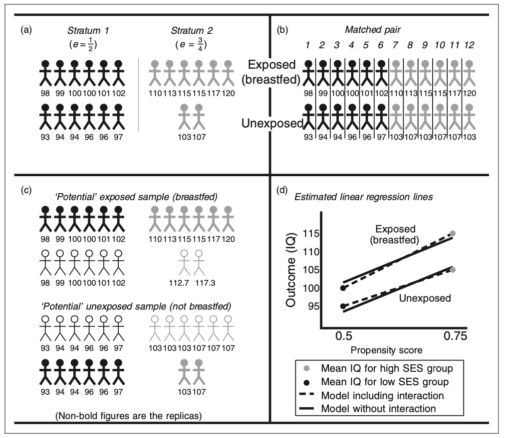
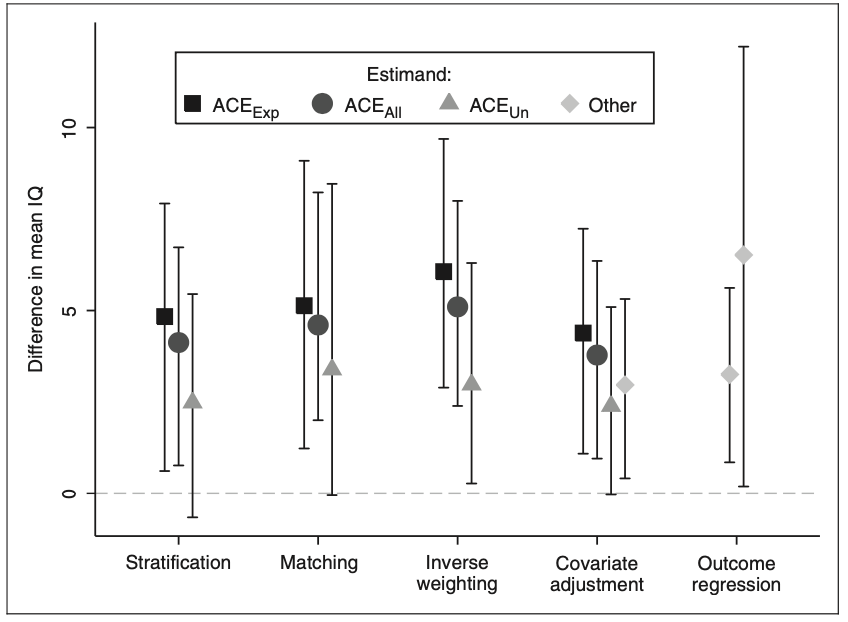
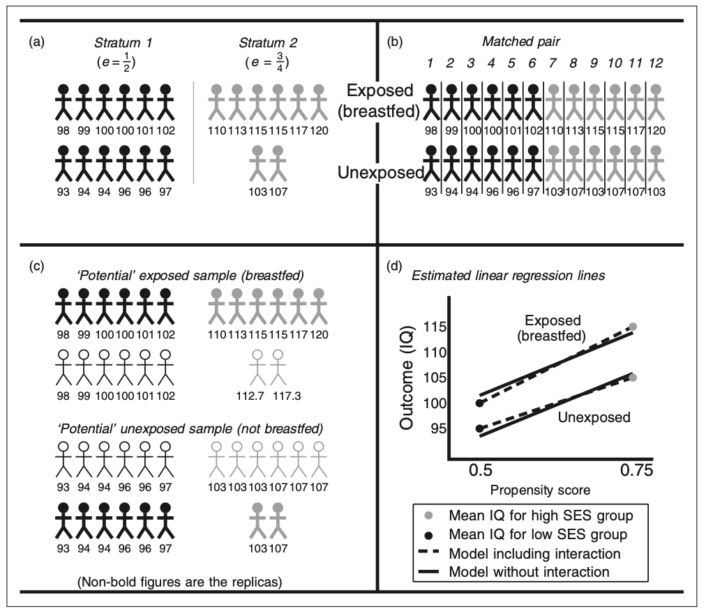
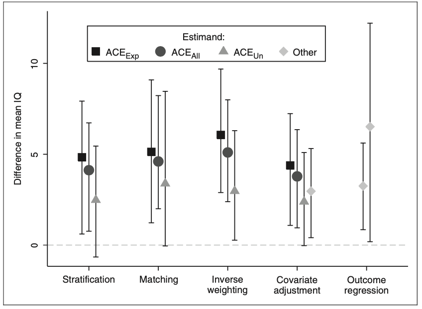

Summary on Propensity scores: From naïve enthusiasm to intuitive understanding [1]
New methodologies have been emerging to estimate the effect of a binary exposure on an outcome or result. Propensity scores has been proven to be useful to estimate the causal effect of exposure under certain assumptions even in the presence of confounding variables. This paper aims to define what is causal effect, detail how the propensity score can estimate causal effects as well as the assumptions and concerns about this method using an example of exposure to breast milk and the infant’s consequent neurodevelopment (IQ) after 7.5 years. In this example, each individual has two potential outcomes, one in the individual was exposed to breastfeeding or not but only one outcome can be observed from the data and the other outcome is defined as counterfactual. Therefore, the causal effect can be defined as the mean of the individual causal effect and can be estimated by using results of other individuals to calculate counterfactual outcomes that were not observed.
Three different causal effects are of interest and are used depending on the questions that wants to be answered: the Average Causal Effect of the Exposure (ACEALL) which is the causal effect in the entire population, the Average Causal Effect of the Exposure on the Exposed (ACEEXP) which considers the subgroup of the population that is exposed, and the Average Causal Effect of the Unexposed (ACEUNE) that considers the subgroup of the unexposed. Nevertheless, some assumptions need to be met: the exposure must precede its effect, each subject have to be a prospective candidate to be exposed and unexposed, that sample data is independent, and that there are not unobserved confounders. 
Causal Effects can be estimated using four different propensity scores methods: stratification, matching, inverse weighting, and covariate adjustment. The stratification method consists of making strata or groups of the individuals who have ethe same propensity score, estimating the exposure effect between exposed and unexposed group and using a weighted average. The matching method consist of pairing each exposed individual with another unexposed with the same propensity score and calculating the average pair estimate of the effect of the exposure after taking the difference in the two outcomes of within-pair effect. The inverse weighting creates two potential samples, each one for each outcome, assigning a replica to the original individual’s outcome based on the propensity score and individual’s characteristics. That is, if the propensity score is 1/2 for low-income individuals, then the replica should have the same number of individuals for high income entities and the same outcome of the original individual. Finally, the covariate adjustment can be estimated using a linear regression where the dependent variable would be the outcome and the independent variables to be the exposure and the propensity score. The regression coefficient for the propensity score variable should result in the estimate of the exposure effect. Figure 1 provides a graphical representation of the four different estimation methods.
Choosing a method and estimating the propensity score is not considered to be a trivial decision given that each one has advantages and disadvantages. Propensity scores are often estimated using logistic regression using all the confounders, but other non and semi-parametric approaches to this model have been proposed.
 In the breastfeeding example, a total of 926 babies were considered and were assessed at approximately 7.5 years of age by measuring their IQ. Additionally, other variables like social class, mother’s education, family structure, marital status, infant age and gender, birthweight and birth order were considered. Propensity scores were estimated using a logistic regression and the three causal effects were calculated with the four methods but only 487 follow-up samples were collected. Results show that each methods performance was similar as shown in Figure 2, suggesting a positive relationship between breast milk consumption and IQ.
In conclusion, Causal inference is still a topic that deserves to be investigated more rigorously. Although relevance has been found in the studies carried out, there is still debate about the assumptions that are needed for these models to be used. Many of the areas of interest include estimating confidence intervals for propensity scores, using these propensity scores to train nonparametric models, and establishing a consensus for their proper use.
References
[1] Williamson, E., Morley, R., Lucas, A., & Carpenter, J. (2011). Propensity scores: From naïve enthusiasm to intuitive understanding. Statistical Methods in Medical Research, 21(3), 273–293. https://doi.org/10.1177/0962280210394483
[2] Rosenbaum PR and Rubin DB. The central role of the propensity score in observational studies for causal effects. Biometrika 1983; 70: 41–55.
[3] Senn S, Graf E and Caputo A. Stratification for the propensity score compared with linear regression techniques to assess the effect of treatment or exposure. Stat Med 2007; 26: 5529–5544.
[4] D’Agostino RB. Propensity score methods for bias reduction in the comparison of a treatment to a non- randomized control group. Stat Med 1998; 17: 2265–2281.
[5] Joffe MM and Rosenbaum PR. Invited commentary: Propensity scores. Am J Epidemiol 1999; 150: 327–333.
[6] Austin PC and Mamdani MM. A comparison of propensity score methods: A case-study estimating the effectiveness of post-AMI statin use. Stat Med 2006; 25: 2084–2106.
[7] Kurth T, Walker AM, Glynn RJ, et al. Results of multivariable logistic regression, propensity matching, propensity adjustment, and propensity-based weighting under conditions of nonuniform effect. Am J Epidemiol 2006; 163: 262–270.
[8] Weschler D. Weschler Intelligence Scale for Children, Anglicized revised edition. Sidcup, Kent: The Psychological Corporation Ltd.; 1974.
New methodologies have been emerging to estimate the effect of a binary exposure on an outcome or result. Propensity scores has been proven to be useful to estimate the causal effect of exposure under certain assumptions even in the presence of confounding variables. This paper aims to define what is causal effect, detail how the propensity score can estimate causal effects as well as the assumptions and concerns about this method using an example of exposure to breast milk and the infant’s consequent neurodevelopment (IQ) after 7.5 years. In this example, each individual has two potential outcomes, one in the individual was exposed to breastfeeding or not but only one outcome can be observed from the data and the other outcome is defined as counterfactual. Therefore, the causal effect can be defined as the mean of the individual causal effect and can be estimated by using results of other individuals to calculate counterfactual outcomes that were not observed.
Three different causal effects are of interest and are used depending on the questions that wants to be answered: the Average Causal Effect of the Exposure (ACEALL) which is the causal effect in the entire population, the Average Causal Effect of the Exposure on the Exposed (ACEEXP) which considers the subgroup of the population that is exposed, and the Average Causal Effect of the Unexposed (ACEUNE) that considers the subgroup of the unexposed. Nevertheless, some assumptions need to be met: the exposure must precede its effect, each subject have to be a prospective candidate to be exposed and unexposed, that sample data is independent, and that there are not unobserved confounders. 
Causal Effects can be estimated using four different propensity scores methods: stratification, matching, inverse weighting, and covariate adjustment. The stratification method consists of making strata or groups of the individuals who have ethe same propensity score, estimating the exposure effect between exposed and unexposed group and using a weighted average. The matching method consist of pairing each exposed individual with another unexposed with the same propensity score and calculating the average pair estimate of the effect of the exposure after taking the difference in the two outcomes of within-pair effect. The inverse weighting creates two potential samples, each one for each outcome, assigning a replica to the original individual’s outcome based on the propensity score and individual’s characteristics. That is, if the propensity score is 1/2 for low-income individuals, then the replica should have the same number of individuals for high income entities and the same outcome of the original individual. Finally, the covariate adjustment can be estimated using a linear regression where the dependent variable would be the outcome and the independent variables to be the exposure and the propensity score. The regression coefficient for the propensity score variable should result in the estimate of the exposure effect. Figure 1 provides a graphical representation of the four different estimation methods. Choosing a method and estimating the propensity score is not considered to be a trivial decision given that each one has advantages and disadvantages. Propensity scores are often estimated using logistic regression using all the confounders, but other non and semi-parametric approaches to this model have been proposed.
 In the breastfeeding example, a total of 926 babies were considered and were assessed at approximately 7.5 years of age by measuring their IQ. Additionally, other variables like social class, mother’s education, family structure, marital status, infant age and gender, birthweight and birth order were considered. Propensity scores were estimated using a logistic regression and the three causal effects were calculated with the four methods but only 487 follow-up samples were collected. Results show that each methods performance was similar as shown in Figure 2, suggesting a positive relationship between breast milk consumption and IQ.
In conclusion, Causal inference is still a topic that deserves to be investigated more rigorously. Although relevance has been found in the studies carried out, there is still debate about the assumptions that are needed for these models to be used. Many of the areas of interest include estimating confidence intervals for propensity scores, using these propensity scores to train nonparametric models, and establishing a consensus for their proper use.
References
[1] Williamson, E., Morley, R., Lucas, A., & Carpenter, J. (2011). Propensity scores: From naïve enthusiasm to intuitive understanding. Statistical Methods in Medical Research, 21(3), 273–293. https://doi.org/10.1177/0962280210394483
[2] Rosenbaum PR and Rubin DB. The central role of the propensity score in observational studies for causal effects. Biometrika 1983; 70: 41–55.
[3] Senn S, Graf E and Caputo A. Stratification for the propensity score compared with linear regression techniques to assess the effect of treatment or exposure. Stat Med 2007; 26: 5529–5544.
[4] D’Agostino RB. Propensity score methods for bias reduction in the comparison of a treatment to a non- randomized control group. Stat Med 1998; 17: 2265–2281.
[5] Joffe MM and Rosenbaum PR. Invited commentary: Propensity scores. Am J Epidemiol 1999; 150: 327–333.
[6] Austin PC and Mamdani MM. A comparison of propensity score methods: A case-study estimating the effectiveness of post-AMI statin use. Stat Med 2006; 25: 2084–2106.
[7] Kurth T, Walker AM, Glynn RJ, et al. Results of multivariable logistic regression, propensity matching, propensity adjustment, and propensity-based weighting under conditions of nonuniform effect. Am J Epidemiol 2006; 163: 262–270.
[8] Weschler D. Weschler Intelligence Scale for Children, Anglicized revised edition. Sidcup, Kent: The Psychological Corporation Ltd.; 1974.